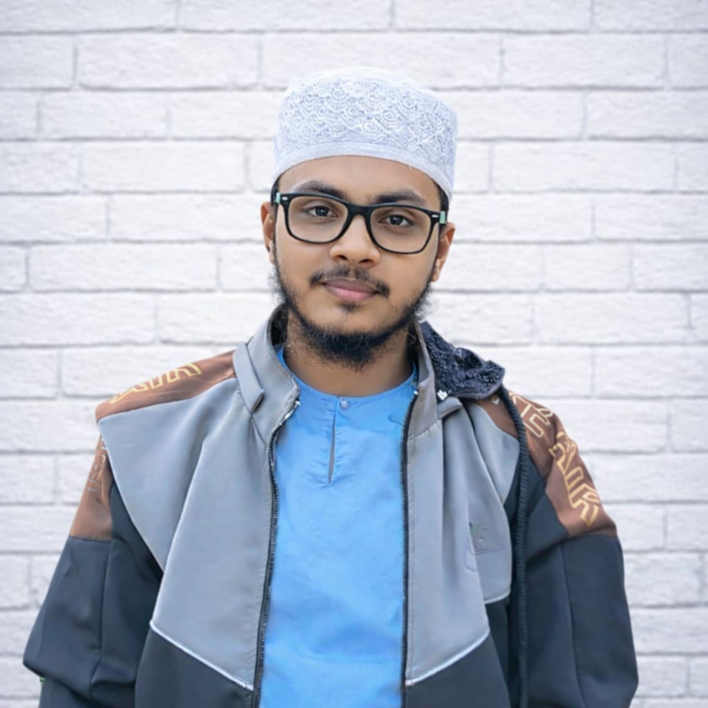
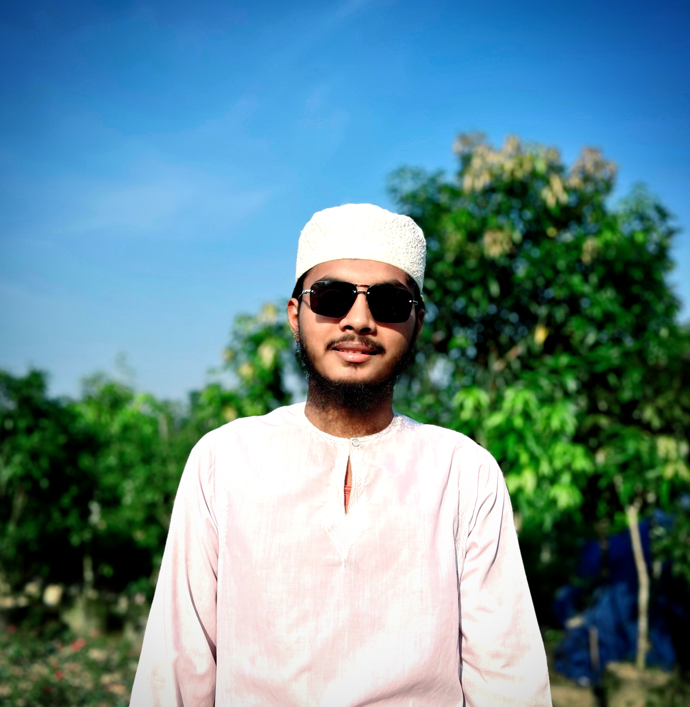
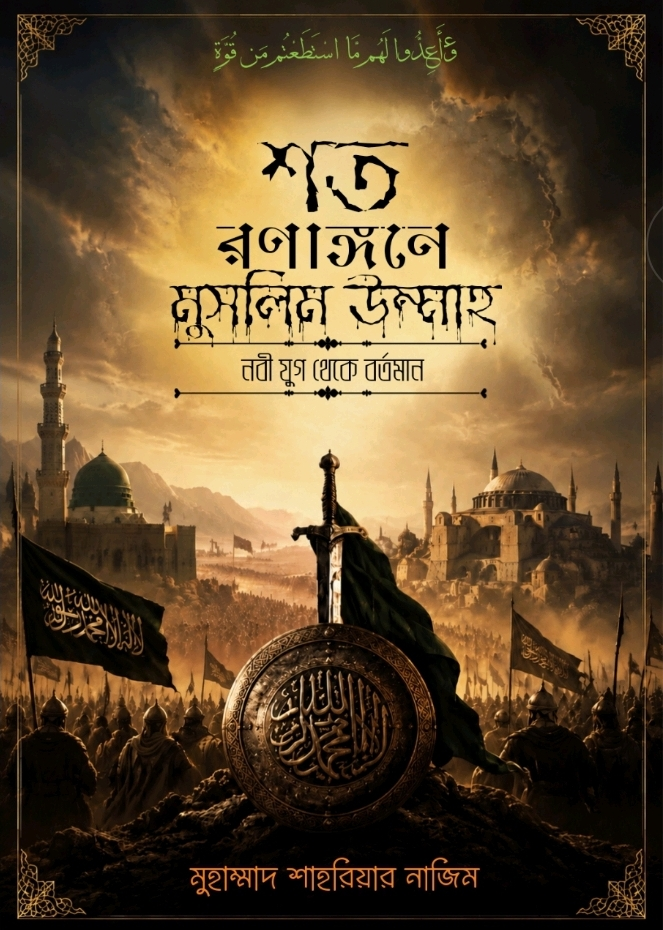
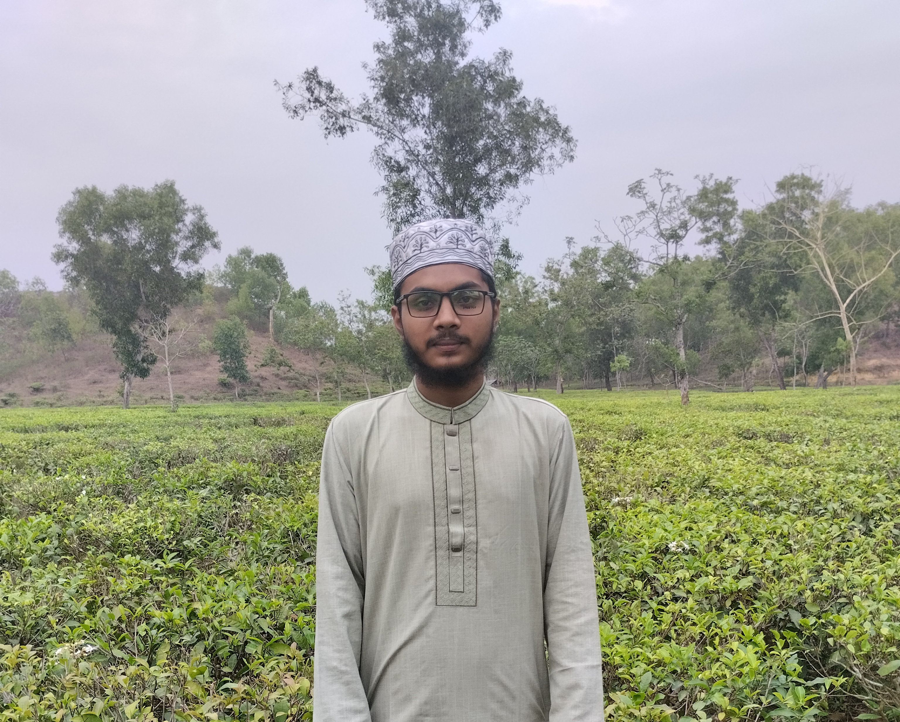
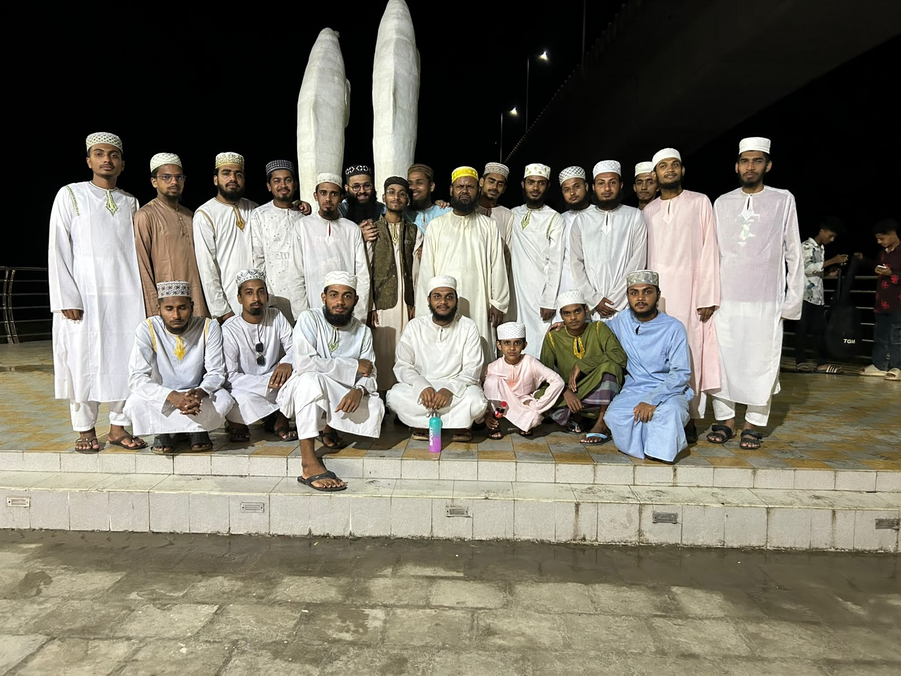
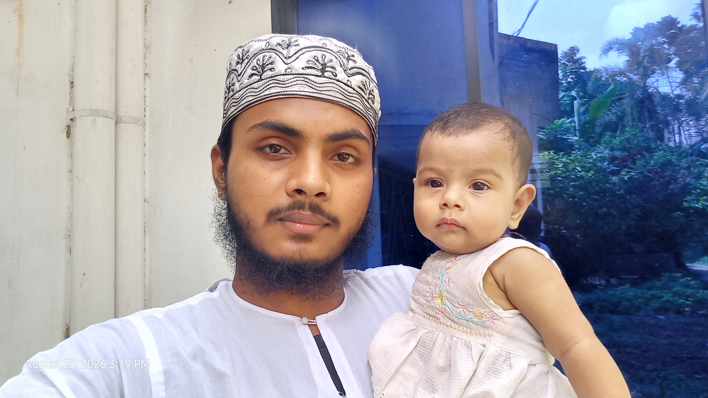
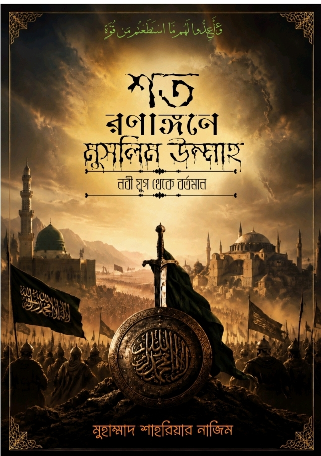

আসসালামু আলাইকুম, স্বাগতম
আমি কে, কী ভালোবাসি, কীভাবে ভাবি।
জীবনের গুরুত্বপূর্ণ মুহূর্ত ও স্মৃতিগুলো সময়ের ক্রমে।
Personal Profile, Education, Skills and Achievements

Student | Writer | Islamic History Enthusiast
📍 Kathalbari, Kurigram Sadar, Kurigram, Bangladesh
📞 01994171144
✉️ muhammadshahriarnazim@gmail.com
🌐 mshahriarnazim.github.io
I belong to a middle-class family of four members. My family consists of my father, mother, younger sister, and me. I am the eldest son of my family. My younger sister's name is Nusrat Jahan Riya. I grew up in a loving and supportive family.
Village: Shibram Fakirpara
Post Office: Kathalbari
Post Code: 5600
Upazila: Kurigram Sadar
District: Kurigram
Country: Bangladesh
Date of Birth: 22 October 2005
A dedicated student with a strong interest in Islamic studies, history, writing, research and continuous learning. Passionate about reading, writing, exploring history and sharing knowledge through personal writing and digital platforms.
Subject: Islamic History & Culture
College: Government Brojomohun College
University: National University, Bangladesh
Academic Session: 2025–2026
Result: Ongoing
Institution: Sarsina Darussunnat Kamil Madrasah
Academic Year: 2025–Present
Institution: Sarsina Darussunnat Kamil Madrasah
Group: Hadith
Academic Session: 2023–2024
Result: Not Published Yet
Institution: Sarsina Darussunnat Kamil Madrasah
Group: Arts
Passing Year: 2024
GPA: 5.00
Institution: Kathalbari Nurullah Fazil Degree Madrasah
Group: Science
Passing Year: 2022
GPA: 4.78
Location: Sylhet, Bangladesh
Participated in Quran learning and training in Sylhet. Gained experience in a structured educational environment and developed an interest in Quranic studies and religious education.
Author: Muhammad Shahriar Nazim
Publication Status: Published
Bengali: Fluent
English: Basic to Intermediate
Arabic: Basic to Intermediate
To continue learning, improve my academic and professional abilities, and contribute positively through education, writing, research and knowledge sharing.
আমার লেখা ও প্রকাশিত বইসমূহ

লেখক: মুহাম্মাদ শাহরিয়ার নাজিম
মহানবী (সাঃ)-এর যুগ থেকে বর্তমান সময় পর্যন্ত মুসলিম উম্মাহর ইতিহাসে সংঘটিত উল্লেখযোগ্য যুদ্ধ ও সামরিক অভিযান নিয়ে একটি ঐতিহাসিক সংকলন।
📥 বইটি ডাউনলোড করুনআমার জীবনের স্মরণীয় কিছু ভ্রমণ ও কাজের গল্প

সিলেটে কাটানো স্মরণীয় দিনগুলোর গল্প।
জীবনের প্রতিটি সফরই আমাদের কিছু না কিছু দিয়ে যায়। কোনো সফর নতুন জায়গার সঙ্গে পরিচয় করিয়ে দেয়, কোনোটি নতুন মানুষের সঙ্গে সম্পর্ক তৈরি করে। আমার জীবনের তেমনই একটি স্মরণীয় অভিজ্ঞতা হলো ২০২৬ সালের মার্চ মাসে সিলেট সফর।
এটি কেবল একটি ভ্রমণ ছিল না; বরং ছিল নতুন পরিবেশে নিজেকে মানিয়ে নেওয়া, দ্বীনি শিক্ষা অর্জন, পবিত্র রমজানের দিনগুলো কাটানো এবং জীবনের কিছু বিশেষ অভিজ্ঞতা সঞ্চয় করার একটি সুযোগ। প্রায় ১৮ দিনের এই সফর আমার স্মৃতিতে বিশেষ জায়গা দখল করে আছে।
২০২৬ সালের মার্চ মাসে পবিত্র রমজান চলাকালে আমি সিলেটে যাই। নতুন জায়গা, নতুন মানুষ ও নতুন পরিবেশের সঙ্গে পরিচিত হওয়ার মধ্য দিয়ে শুরু হয় আমার জীবনের একটি নতুন অধ্যায়। প্রথম দিকে সবকিছু কিছুটা অপরিচিত মনে হলেও ধীরে ধীরে পরিবেশের সঙ্গে মানিয়ে নিতে শুরু করি।
আমি মূলত দ্বীনি শিক্ষা ও কুরআন শেখার উদ্দেশ্যে সিলেটে গিয়েছিলাম। সেখানে পড়াশোনা, ক্লাস ও বিভিন্ন শিক্ষামূলক কার্যক্রমে অংশগ্রহণের সুযোগ হয়েছিল। নতুন পরিবেশে শিক্ষকদের কাছ থেকে শেখা এবং অন্যদের সঙ্গে সময় কাটানো আমার অভিজ্ঞতার ঝুলিতে নতুন কিছু যোগ করেছে।
আমার এই সফরের অন্যতম বিশেষ দিক ছিল পবিত্র রমজান। পরিবার ও পরিচিত পরিবেশ থেকে দূরে থেকে রমজান কাটানো ছিল এক ভিন্ন অভিজ্ঞতা। চারপাশের ইবাদত-বন্দেগি, কুরআন তিলাওয়াত এবং রমজানের বিশেষ আবহ আমার মনে গভীর ছাপ ফেলেছিল।
এই সময়টি আমাকে ধৈর্য, দায়িত্ববোধ ও আত্মনির্ভরশীলতার শিক্ষা দিয়েছে। নতুন পরিবেশে থেকেও নিজের পড়াশোনা, ইবাদত ও দৈনন্দিন কাজ চালিয়ে যাওয়ার অভিজ্ঞতা হয়েছিল।
সিলেট সফরের সবচেয়ে স্মরণীয় ঘটনাগুলোর মধ্যে একটি ছিল তারাবির নামাজে ইমামতি করার সুযোগ পাওয়া। রমজান মাসের শেষের দিকে একজন সম্মানিত হুজুরের পরিবর্তে কয়েক দিন আমাকে তারাবির নামাজে ইমামতি করার দায়িত্ব দেওয়া হয়েছিল।
বিষয়টি আমার জন্য ছিল আনন্দের পাশাপাশি অত্যন্ত দায়িত্বপূর্ণ একটি অভিজ্ঞতা। মুসল্লিদের সামনে দাঁড়িয়ে তারাবির নামাজ পরিচালনা করা আমার জীবনের একটি বিশেষ স্মৃতি হয়ে থাকবে। আল্লাহর অশেষ রহমতে সেই দায়িত্ব পালন করার সুযোগ হয়েছিল।
নিজের বাড়ি, পরিবার ও পরিচিত মানুষদের ছেড়ে অন্য জায়গায় অবস্থান করার মধ্যে এক ধরনের শূন্যতা কাজ করে। কুড়িগ্রামে আমার পরিবার ও আপনজনদের কথা স্বাভাবিকভাবেই মনে পড়ত। তবে এই সময়টুকু আমাকে নিজের কাজ নিজে করতে, পরিস্থিতির সঙ্গে মানিয়ে নিতে এবং ধৈর্য ধারণ করতে শিখিয়েছে।
রমজানের শেষ পর্যায়ে এসে উপস্থিত হয় পবিত্র ঈদুল ফিতর। সাধারণত ঈদ মানেই পরিবারের সঙ্গে আনন্দ ভাগাভাগি করা, আত্মীয়স্বজনের সঙ্গে দেখা করা এবং প্রিয় মানুষদের পাশে থাকা। কিন্তু সেবার সিলেটে অবস্থান করায় ঈদের অভিজ্ঞতা ছিল আমার জন্য কিছুটা ভিন্ন।
পরিবার ও পরিচিত মানুষদের থেকে দূরে থাকার কারণে কিছুটা শূন্যতা অনুভব করেছিলাম। তবুও নতুন পরিবেশে ঈদের দিনটি কাটানো আমার জীবনে একটি নতুন অভিজ্ঞতা যোগ করেছে।
সিলেটে আমার অবস্থান ছিল প্রায় ১৮ দিনের মতো। এই অল্প সময়ের মধ্যেই অনেক নতুন অভিজ্ঞতা অর্জনের সুযোগ হয়েছিল। দ্বীনি শিক্ষা, রমজানের দিনগুলো, তারাবির নামাজে ইমামতি এবং নতুন মানুষের সঙ্গে পরিচয়—সবকিছু মিলিয়ে সফরটি হয়ে উঠেছিল স্মরণীয়।
অবশেষে প্রায় ১৮ দিন পর সিলেট থেকে নিজ জেলা কুড়িগ্রামে ফিরে আসি। ফিরে আসার পরও সিলেটে কাটানো দিনগুলোর স্মৃতি মনে রয়ে যায়।
এই সফর থেকে আমি শুধু নতুন একটি জায়গায় যাওয়ার অভিজ্ঞতা অর্জন করিনি; বরং নতুন পরিবেশে নিজেকে মানিয়ে নেওয়া, দ্বীনি শিক্ষা অর্জন, মানুষের সঙ্গে সুন্দর সম্পর্ক গড়ে তোলা এবং দায়িত্ব পালনের গুরুত্ব উপলব্ধি করেছি।
বিশেষ করে তারাবির নামাজে ইমামতি করার সুযোগটি আমার কাছে ছিল এক অনন্য প্রাপ্তি। এটি আমাকে দায়িত্বশীলতা ও মানুষের আস্থা রক্ষা করার প্রয়োজনীয়তা স্মরণ করিয়ে দিয়েছে।
জীবনে হয়তো ভবিষ্যতে আরও অনেক জায়গায় যাওয়ার সুযোগ হবে, নতুন মানুষের সঙ্গে পরিচয় হবে এবং আরও অনেক অভিজ্ঞতা অর্জিত হবে। কিন্তু ২০২৬ সালের মার্চ মাসে সিলেটে কাটানো এই প্রায় ১৮ দিন আমার জীবনের স্মৃতির পাতায় বিশেষভাবে লেখা থাকবে।
সিলেটের সেই নতুন পরিবেশ, দ্বীনি শিক্ষার দিনগুলো, পবিত্র রমজানের আবহ, তারাবির নামাজে ইমামতি করার সুযোগ এবং পরিবার থেকে দূরে কাটানো সময়—সবকিছুই আমার জীবনের এক মূল্যবান অধ্যায়।
আলহামদুলিল্লাহ, মহান আল্লাহর কাছে কৃতজ্ঞতা— তিনি আমাকে জীবনের এমন একটি সুন্দর অভিজ্ঞতা অর্জনের সুযোগ দিয়েছেন।
সিলেট সফর শেষ হয়েছে, কিন্তু সেই সফরের স্মৃতিগুলো আজও আমার হৃদয়ে অমলিন।

দ্বীপ ভ্রমণের কিছু স্মরণীয় মুহূর্ত।
১৭ সেপ্টেম্বর ২০২৬, বৃহস্পতিবার
মানুষের জীবনে কিছু কিছু দিন আসে, যেগুলো সাধারণ দিনের মতো হলেও সময়ের সঙ্গে সঙ্গে বিশেষ স্মৃতিতে পরিণত হয়। জীবনের ব্যস্ততা, পড়াশোনা আর নানা দায়িত্বের ভিড়ে বন্ধুদের সঙ্গে কাটানো আনন্দঘন মুহূর্তগুলোই একসময় হয়ে ওঠে সবচেয়ে মূল্যবান স্মৃতি। তেমনই একটি স্মরণীয় দিন ছিল আমাদের চরখালি দ্বীপ ভ্রমণ।
অনেক দিন ধরেই কোথাও ঘুরতে যাওয়ার ইচ্ছা ছিল। কিন্তু নানা ব্যস্ততা ও পরিস্থিতির কারণে সেই ইচ্ছা আর বাস্তবে রূপ নিচ্ছিল না। বিশেষ করে সহপাঠীদের সঙ্গে অনেক দিন কোথাও একসঙ্গে ঘুরতে যাওয়া হয়নি। ফাজিল প্রথম বর্ষের পড়াশোনা, ক্লাস ও পরীক্ষার প্রস্তুতির কারণে সময় বের করাও বেশ কঠিন হয়ে পড়েছিল।
এরই মধ্যে আমার ফাজিল প্রথম বর্ষের পরীক্ষার রুটিন প্রকাশিত হলো। ১৫ অক্টোবর ২০২৬ থেকে পরীক্ষা শুরু হওয়ার কথা। পরীক্ষার প্রস্তুতির ব্যস্ততার মধ্যেই ১৫ সেপ্টেম্বর রাতে তৈয়ব এর কাছ থেকে একটি প্রস্তাব এল। সে বলল, কোথাও ঘুরতে যাওয়া দরকার। আমিও সম্মতি জানালাম। বললাম, ঠিক আছে, সময় করে কোথাও যাওয়া যাবে।
কিন্তু এর কিছুক্ষণ পরই শুনতে পেলাম, বন্ধুরা ঘুরতে যাওয়ার পরিকল্পনাকে বাস্তবে রূপ দিতে প্রস্তুতি শুরু করে দিয়েছে। তাদের পরিকল্পনা ছিল, সবাই মিলে ট্রলারে করে চরখালি নামের একটি জায়গায় ঘুরতে যাবে।
প্রথমে যেতে খুব একটা আগ্রহ দেখাতে পারিনি। কারণ, তখন আমার হাতে পর্যাপ্ত টাকা ছিল না। এরই মধ্যে প্রায় দুই হাজার টাকা ধার হয়ে ছিল। তাই আর নতুন করে খরচ করার সাহস পাচ্ছিলাম না। বন্ধুদের জানিয়ে দিলাম, এবার আমার পক্ষে যাওয়া সম্ভব হবে না।
কিন্তু বন্ধুদের আন্তরিকতা কখনো কখনো মানুষের সব দ্বিধা দূর করে দেয়। জুবায়ের আমাকে যাওয়ার জন্য টাকা দিয়ে দিল। যদিও টাকাটি ধার হিসেবেই নিয়েছিলাম, তবুও বন্ধুর এই আন্তরিকতা আমাকে মুগ্ধ করেছিল। শেষ পর্যন্ত আর না করতে পারলাম না। আমিও যাওয়ার প্রস্তুতি নিতে শুরু করলাম।
অবশেষে আমাদের যাত্রার দিন নির্ধারিত হলো ১৭ সেপ্টেম্বর। সকাল ৭টার দিকে সবাই একত্রিত হওয়ার কথা ছিল। সবার মধ্যে তখন ভ্রমণ নিয়ে বেশ উৎসাহ ও আনন্দ কাজ করছিল। দীর্ঘদিন পর বন্ধুদের সঙ্গে একসঙ্গে কোথাও যাওয়ার সুযোগ—এ যেন এক অন্যরকম অনুভূতি।
নির্ধারিত দিনে সকালবেলা ঘুম থেকে উঠে প্রয়োজনীয় প্রস্তুতি সম্পন্ন করলাম। এরপর সবার সঙ্গে মিলিত হলাম। একে একে বন্ধুরা আসতে শুরু করল। সবার মুখে ছিল আনন্দের ছাপ। কেউ গল্প করছিল, কেউ হাসি-ঠাট্টায় মেতে উঠেছিল। এভাবেই আমাদের প্রতীক্ষিত ভ্রমণের সূচনা হলো।
সকাল প্রায় ৯টা ৫০ মিনিটের দিকে আমাদের ট্রলার যাত্রা শুরু করল। চারপাশে নদীর বিস্তীর্ণ জলরাশি, নির্মল বাতাস আর প্রকৃতির অপরূপ সৌন্দর্য—সব মিলিয়ে পরিবেশটা ছিল মনোমুগ্ধকর।
ট্রলারে বসে আমরা নানা গল্পে মেতে উঠলাম। কেউ ছবি তুলছিল, কেউ বন্ধুদের সঙ্গে হাসি-ঠাট্টা করছিল। আবার কেউ নীরবে নদীর সৌন্দর্য উপভোগ করছিল। দীর্ঘদিনের একঘেয়েমি ও ব্যস্ততা যেন ধীরে ধীরে দূর হয়ে যাচ্ছিল।
আমাদের সঙ্গে কয়েকজন বন্ধু ও সহপাঠী ছিল। তাদের মধ্যে কোটালিপাড়ার কয়েকজনও ছিল। সবার সঙ্গে একসঙ্গে সময় কাটানোর আনন্দ ছিল আলাদা। বিশেষ করে নতুন বন্ধুদের সঙ্গে পরিচয় ও তাদের সঙ্গে মেলামেশা ভ্রমণটিকে আরও প্রাণবন্ত করে তুলেছিল।
একসময় আমরা আমাদের গন্তব্যের কাছাকাছি পৌঁছে গেলাম। সেখানে পৌঁছে চারপাশের পরিবেশ দেখে ভালো লাগল। নদী, পানি আর প্রকৃতির সৌন্দর্য আমাদের মুগ্ধ করেছিল।
আমরা সবাই মিলে আনন্দ করলাম। কেউ পানিতে নামল, কেউ ছবি তুলল, আবার কেউ বন্ধুদের সঙ্গে গল্পে মেতে উঠল। সময় যেন খুব দ্রুত কেটে যাচ্ছিল।
আসলে ভ্রমণের আনন্দ শুধু কোনো নির্দিষ্ট জায়গায় পৌঁছানোর মধ্যে সীমাবদ্ধ নয়; বরং প্রিয় মানুষদের সঙ্গে পথ চলা, একসঙ্গে হাসাহাসি করা এবং ছোট ছোট মুহূর্ত উপভোগ করার মধ্যেই প্রকৃত আনন্দ লুকিয়ে থাকে।
সেদিনের প্রতিটি মুহূর্ত আমাদের কাছে ছিল উপভোগ্য। পড়াশোনার চাপ, দৈনন্দিন ব্যস্ততা ও নানা চিন্তা থেকে কিছু সময়ের জন্য হলেও মুক্তি পেয়েছিলাম। প্রকৃতির সান্নিধ্যে কাটানো সেই সময় আমাদের মনে এক অন্যরকম প্রশান্তি এনে দিয়েছিল।
দিনের আলো ধীরে ধীরে কমে আসছিল। এবার ফেরার পালা। সবাই আবার ট্রলারে উঠে বসলাম। ফেরার পথেও গল্প, হাসি-ঠাট্টা ও আনন্দের কমতি ছিল না।
যদিও আমাদের ফেরার সময় আরও আগে হওয়ার কথা ছিল, কিন্তু নানা কারণে ফিরতে ফিরতে রাত প্রায় ১১টা বেজে গেল। দীর্ঘ একটি দিনের শেষে আমরা ফিরে এলাম। শরীরে কিছুটা ক্লান্তি থাকলেও মনে ছিল অসংখ্য আনন্দঘন স্মৃতি।
জীবনে অনেক জায়গায় ঘুরতে যাওয়া হয়, অনেক মানুষের সঙ্গে দেখা হয়; কিন্তু সব ভ্রমণ মনে জায়গা করে নিতে পারে না। কিছু ভ্রমণ থাকে, যেগুলো শুধু একটি জায়গা দেখার অভিজ্ঞতা নয়, বরং মানুষের সঙ্গে সম্পর্ক, বন্ধুত্ব ও ভালোবাসার স্মৃতি হয়ে থাকে।
আমাদের চরখালি দ্বীপ ভ্রমণও ছিল তেমনই একটি অভিজ্ঞতা। হয়তো ভবিষ্যতে আমরা সবাই নিজ নিজ ব্যস্ততায় ব্যস্ত হয়ে পড়ব। কারও পড়াশোনা, কারও কর্মজীবন, আবার কারও জীবনের নানা দায়িত্ব আমাদের আলাদা পথে নিয়ে যাবে। কিন্তু এই দিনটির কথা মনে পড়লে নিশ্চয়ই আবার ফিরে আসবে সেই আনন্দঘন মুহূর্তগুলো।
জীবনের এই ছোট ছোট আনন্দই একসময় বড় স্মৃতি হয়ে বেঁচে থাকে। তাই চরখালি দ্বীপ ভ্রমণ আমার স্মৃতির পাতায় একটি বিশেষ স্থান দখল করে থাকবে।
— দিনলিপির পাতায় সংরক্ষিত একটি স্মরণীয় দিন।

চাঁদপুর ভ্রমণের স্মৃতি ও অভিজ্ঞতা।
চাঁদপুর ভ্রমণের বিস্তারিত এখানে যুক্ত করা হবে।

বই লেখা ও সংকলনের পেছনের গল্প।
বই সংকলনের বিস্তারিত এখানে যুক্ত করা হবে।
আমার নির্বাচিত ভিডিও ও স্মৃতির সংগ্রহ
অ্যালবাম বেছে নিন, ছবিতে ক্লিক করলে বড় হবে।
বার্তা পাঠান বা নিচের মাধ্যমে সরাসরি যোগাযোগ করুন।